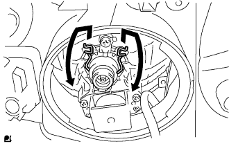

Headlamp ASSY decomposition |
| 1. Remove the front turn signal lamp socket |
|
Remove the front turn signal lamp valve with the front turn signal lamp socket.
| 2. Remove the front turn signal lamp valve |
Remove the front turn signal lamp valve from the front turn signal lamp socket.
| 3. Remove the clearance lamp socket |
 |
Remove the clearance lump valve together with the clearance lamp socket.
| 4. Remove the clearance lamp valve |
Remove the clearance lump valve from the clearance lamp socket.
| 5. Remove the headlamp socket cover (discharge headlamp) |
 |
Cut the connector and remove the head lamp socket cover.
| 6. Head lamp back cover No.1 removed (discharge headlamp) |
Turn the headlamp back cover No.1 in the direction of the arrow in the figure.
| 7. Discharge headlamp valve removed (discharge headlamp) |
 |
Turn the socket part of the light control computer in the direction of the arrow in the figure.
|  |
Press the set spring as shown in the figure to remove the discharge head lamp valve.
| 8. Headlamp Light Control Computer ASSY LH removed (Discharge headlamp) |
 |
Remove the three screws and remove the reflector ASSY.
 |
Take off the four screws.
Cut the connector.
Rotate the left and right adjustments of the screws left and right, create a gap between the socket of the light control computer, and remove the head light control computer ASSY LH.
 |
| 9. Remove headlamp gasket (discharge headlamp) |
Remove the head lamp gasket.
| 10. Remove the headlamp socket cover (discharge headlamp) |
Remove the head lamp socket cover.
| 11. Remove the headlamp socket cover (halogen headlamp) |
Remove the head lamp socket cover.
| 12. Headlamp No.1 Valve removed (halogen headlamp) |
Press the set spring as shown in the figure to remove the head lamp valve.
| 13. Remove the head lamp leveling motor LH |
 |
Rotate the Eming screw and remove the screw with the reflector.
Rotate the head ramp slamer baling motor in the direction of the arrow and remove the head ramp slogging motor LH.
Take off the O -ring.